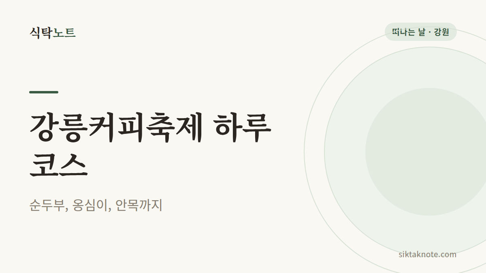
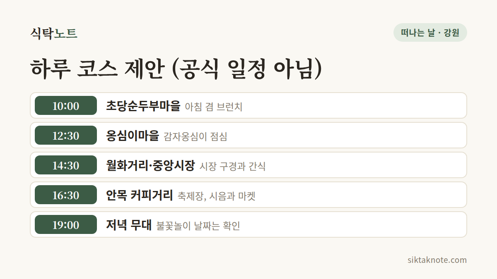

강릉커피축제 2026 하루 코스 — 순두부, 옹심이, 안목 커피거리까지

3줄 요약
- 강릉커피축제는 2026년 10월 21일(수)부터 25일(일)까지 강릉커피거리(안목)에서 열려요.
- 강릉시가 소개한 동선은 초당순두부마을, 월화거리·중앙시장, 옹심이마을, 안목 커피거리 순이에요.
- 시간표와 요금은 아직 공식 사이트에 자세히 올라오지 않아서, 코스 시간은 제안으로 짰어요.
행사 정보
- 기간
- 2026년 10월 21일(수) ~ 25일(일)
- 장소
- 강릉커피거리 (강릉시 창해로14번길 20-1, 안목)
- 입장
- 한국관광공사 안내에는 일부 유료 프로그램이 있다고 되어 있어요
- 시간표
- 공식 사이트에 아직 상세 시간표가 올라오지 않았어요
2026.10.03 확인 기준. 일정과 요금은 바뀔 수 있으니 방문 전에 공식 안내를 한 번 더 확인하세요.

어떤 축제인가요
강릉커피축제는 커피 도시로 알려진 강릉 안목 커피거리 일대에서 열리는 행사예요. 한국관광공사 안내에 소개된 프로그램은 100인 100미 커피 시음, 커피 버스킹, 워크숍, 공예 마켓, 인문학 강연, 마스터클래스, 불꽃놀이, 키즈존, 스탬프 투어예요.
날짜와 장소는 공식 사이트에서 확인했어요. 다만 프로그램별 시간과 요금은 아직 자세히 올라오지 않았어요.
강릉시가 소개한 동선
강릉시 보도자료를 인용한 기사에는 이런 순서가 소개되어 있어요.
- 초당순두부마을
- 월화거리와 중앙시장
- 옹심이마을
- 안목 커피거리
같이 소개된 먹거리는 초당순두부, 장칼국수, 감자옹심이예요. 축제장에서 커피를 마시기 전에 든든하게 먹고 가는 흐름이라고 보시면 돼요.
하루 코스 제안
위 카드는 이 동선에 시간을 붙여 본 제안이에요. 공식 일정이 아니라서 시간은 편한 대로 바꿔 쓰세요.
- 10:00 초당순두부마을: 아침을 겸해 순두부로 속을 편하게 시작해요.
- 12:30 옹심이마을: 감자를 갈아 동그랗게 빚은 옹심이가 들어간 국물로 점심을 먹어요. 강원도의 감자 문화를 맛볼 수 있어요.
- 14:30 월화거리와 중앙시장: 시장을 한 바퀴 돌며 간식과 먹거리를 구경해요.
- 16:30 안목 커피거리: 축제장이에요. 커피 시음과 마켓, 버스킹을 즐기며 바다를 봐요.
- 19:00 저녁 무대: 불꽃놀이와 야간 공연은 날짜를 확인한 뒤 맞춰 가세요.
감자옹심이는 어떤 음식일까요
감자옹심이는 강원도를 대표하는 향토 음식이에요. 감자를 갈아 전분과 섞어 작은 공 모양으로 빚고, 멸치와 다시마로 우린 국물에 끓여 먹어요. 호박이나 버섯을 넣기도 해요. 정선과 영월 같은 산간 지역의 음식으로 알려져 있고, 지금은 강릉에서도 유명해요.
가기 전에 확인하세요
- 혼잡: 축제 기간 주말에는 안목 일대가 붐빌 수 있어요. 가능하면 평일에 가거나 오전에 일찍 움직이세요.
- 주차와 셔틀: 주차와 셔틀 정보는 아직 공지되지 않았어요. 공식 사이트에 올라오면 확인하고, 대중교통을 같이 알아 두면 좋아요.
- 요금: 일부 프로그램은 유료예요. 필요한 프로그램의 요금은 공식 사이트에서 확인하세요.
- 강릉국수축제: 10월 15일부터 18일까지 월화거리에서 열린다는 보도가 있어요. 커피축제보다 먼저라 일정이 겹치지는 않아요. 국수 이야기가 궁금하다면 그때 따로 다녀와도 좋아요.
이 글은 2026년 10월 3일 기준이에요. 시간표와 요금이 올라오면 코스에 반영해서 고쳐 쓸게요.